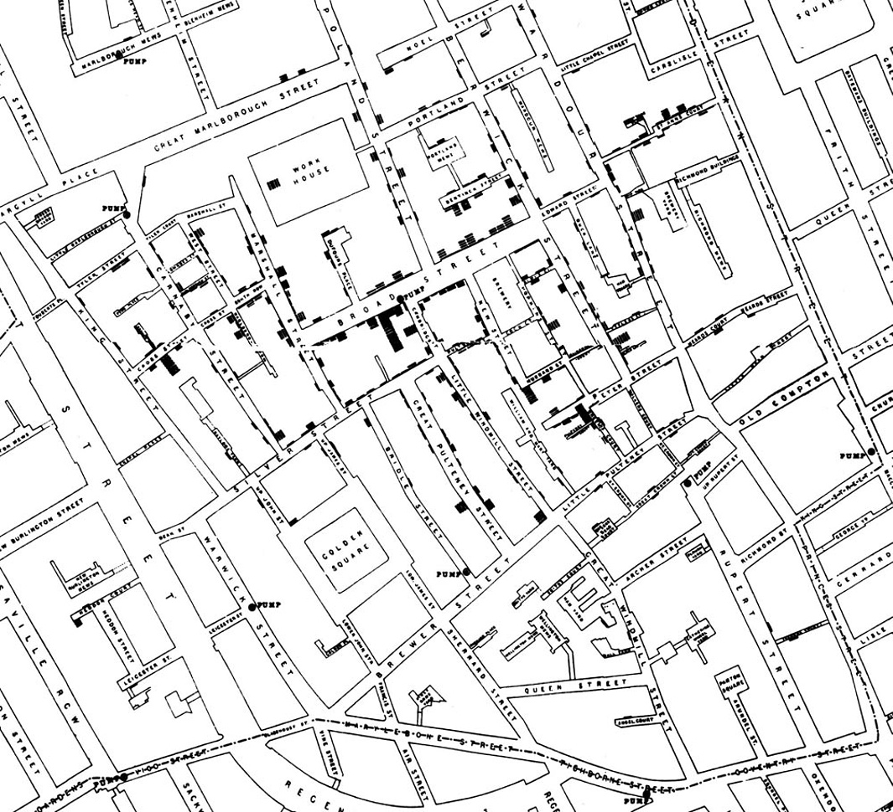
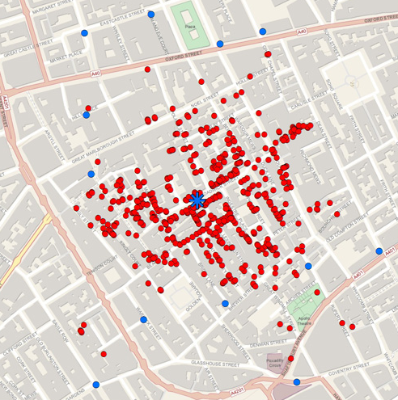
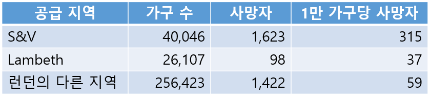

I.7. 콜레라와 존 스노우
콜레라와 존 스노우
“These problems are, and will probably ever remain, among the inscrutable secrets of nature. They belong to a class of questions radically inaccessible to the human intelligence.” —The Times of London, September \(1849\), on how cholera is contracted and spread
콜레라가 어떻게 사람을 감염시키고 또 퍼지는가에 관한 문제는 자연의 불가해한 비밀이며 아마도 영원히 남아있을 것이다. 인간의 지능으로는 근본적으로 해결할 수 없는 종류의 질문에 속한다. \(1849\)년 \(9\)월 런던 타임즈 신문
참조: https://www.inferentialthinking.com/chapters/02/causality-and-experiments.html
\(1850\)년대 런던은 세계에서 가장 부유한 도시였지만 가난한 사람도 많았다. 질병은 런던의 가난한 지역에 만연했고 콜레라는 가장 무서운 전염병이었다. 이 시대에 병을 일으키는 것은 미아즈마(miasma)라고 생각하였다. 미아즈마는 질병을 일으키는 물질이 함유된 나쁜 공기인데 부패하면서 발생하는 악취 같은 것이라고 생각되었다. 런던의 여러 지역에 악취가 진동했는데 여름이 되면 더 심해졌다. 경제적 여유가 있는 사람은 병을 예방하려고 향기가 나는 물질을 코에 붙이고 다녔다.
마취 의사인 존 스노우(John Snow)는 몇 년 동안 가끔 영국에 창궐하는 콜레라에 관심이 있었다. 갑자기 발생한 콜레라에 수천 또는 수만명이 사망하였다. 스노우는 미아즈마 이론에 회의적이었다. 콜레라로 한 가구 모두 사망하였지만 이웃 가구는 무사한 경우도 있었다. 같은 공기, 즉 미아즈마를 같이 들이마셨는데 왜 결과가 다른가? 미아즈마와 콜레라 사이에는 연관이 없다고 생각했다.
콜레라의 초기 증상은 구토와 설사였다. 스노우는 숨쉬는 공기가 아니라 사람들이 먹은 음식이나 마신 물로 콜레라가 감염된다고 생각했다. 스노우가 의심한 것은 생활하수로 오염된 물이었다.
\(1854\)년 \(8\)월 콜레라가 런던의 소호(Soho) 지역에 발생했다. 사망자가 발생할 때마다 스노우는 지도에 표시하였다. 같은 주소에 사망자가 증가할 때마다 막대 높이를 크게 하였다. 검정색 동그라미에 우물의 펌프를 표시하였다. 스노우가 그렸던 흑백 지도에서 패턴을 찾기는 어려우니 칼러 지도로 바꾸어보자.


스노우는 자신이 그린 지도를 세심하게 살펴본 후에 몇가지 이상한 것을 발견했다. 이 모든 것은 콜레라의 범인이 브로드 스트리트 펌프(Broad street pump)임을 암시하였다.
- 지도 가운데 표시된 브로드 스트리트의 펌프보다 먼 곳에 루퍼트 스트리트 펌프가 있다. 루퍼트 펌프에 가까이 사는 사람도 콜레라에 걸렸다. 루퍼트 펌프는 막다른 곳에 있어서 브로드 펌프를 이용하는 것이 더 편했다.
- 브로드 펌프에서 동쪽으로 두 블럭 떨어진 곳에는 콜레라로 사망한 사람이 없었다. 라이온 양조장이 있었는데 공장 안에 자체 우물이 있어 브로드 펌프의 물을 먹지 않았다.
- 브로드 펌프에서 몇 블럭 떨어진 곳에도 사망자가 있었다. 학교를 오가면서 브로드 펌프의 물을 마셨던 아이들이었다. 이 펌프의 물은 시원하고 상쾌한 것으로 알려졌다.
스노우의 이론을 뒷받침한 마지막 증거는 소호에서 대략 \(10\)km 떨어진 햄프스테드에서 나왔다. 햄프스테드에서 두 명의 콜레라 사망자는 한 때 브로드스트리트에서 살았는데 이사한 후에도 브로드 펌프의 물을 매일 배달시켰다.
나중에 브로드 펌프에서 몇 미터 떨어진 곳의 생활 하수가 브로드 펌프로 유입되고 있다는 것이 밝혀졌다. 브로드 펌프의 물이 콜레라 환자의 가정에서 흘러드는 하수로 오염되었던 것이다.
스노우는 지도를 지역 당국에 보여주며 브로드 펌프의 핸들을 제거하라고 설득했다. 콜레라 유행은 지났지만 펌프를 못쓰게 하여 미래의 콜레라 감염을 예방하기 위함이다.
브로드 스트리트 펌프의 핸들을 제거하는 것은 전설이 되었다. 미국 아틀란타 질병관리본부(CDC, Centers of Disease Control)에서 과학자들이 전염병 문제에 대한 답을 찾을 때 “이 펌프의 핸들은 어디 있지?”라고 묻는다.
스노우는 소호에서 배운 것에 고무되어 좀더 체계적인 분석을 하였다. 스노우는 런던의 두 수도 회사가 공급하는 지역의 콜레라 사망자 데이터를 모았다. Lambeth 회사는 하수를 버리는 탬즈 강 상류의 물을 공급하였다. 반면에 S&V 회사는 탬즈 강 하류에서 물을 공급하였다. 어느 회사의 물이 더 깨끗했다고 생각하는가?
스노우는 아래 지도에 두 회사가 공급한 지역을 표시하였다.
스노우는 두 회사가 물을 공급한 지역은 가구 소득이나 인구 특성의 차이가 없음을 알았다. 단 하나의 차이는 어느 회사의 물을 먹었느냐 뿐이다. 스노우는 데이터를 요약한 표를 제시하였다. S&V 회사가 공급한 물을 마신 가구의 사망률은 Lambeth 회사보다 대략 \(10\)배 높았다.

\(1858\)년 \(6\)월 존 스노우는 뇌졸중으로 사망했다. 하지만 그의 이론은 미아즈마 이론에 파묻혀 아무런 지지도 받지 못했다. \(1883\)년 독일 과학자 Robert Koch가 콜레라 균을 발견했다. \(1800\)년대 말 무렵부터 미아즈마 이론은 사라졌다. 스노우의 연구 방법은 전염병이 어떻게 퍼지는가에 관한 연구 분야인 전염병학(epidemiology)으로 이어졌다.
확인문제 1. \(1850\)년대 런던에서 콜레라의 원인에 대한 당시 사람들의 일반적인 믿음은 무엇이었는가?
1 오염된 물을 통해 전파된다.
2 공기를 통해 퍼지는 미아즈마 때문이라고 믿었다.
3 감염된 사람과의 접촉을 통해 전파된다.
4 특정한 음식 섭취로 인해 발생한다.
확인문제 2. 존 스노우가 브로드 스트리트 펌프가 콜레라 감염의 원인임을 밝힌 핵심적인 방법은 무엇인가?
1 감염된 사람의 혈액 샘플을 분석했다.
2 사망자들의 집을 방문하여 인터뷰를 진행했다.
3 콜레라 사망자의 위치를 지도에 표시하여 패턴을 분석했다.
4 감염된 지역과 비감염 지역의 공기 성분을 비교했다.
확인문제 3. 스노우의 연구가 콜레라 전파의 원인을 밝혀내는 데 기여한 중요한 점은 무엇인가?
1 콜레라가 특정 유전적 요인에 의해 발생함을 입증했다.
2 공기보다는 물이 전염 경로임을 데이터로 증명했다.
3 콜레라의 치료법을 개발하는 데 성공했다.
4 콜레라를 완전히 박멸할 수 있는 백신을 개발했다.